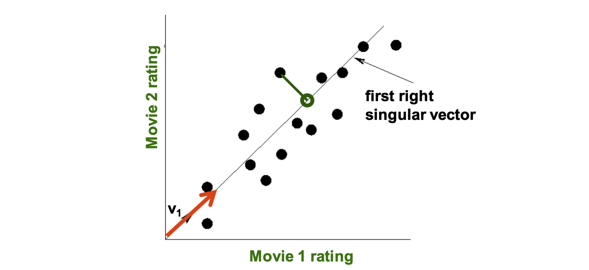
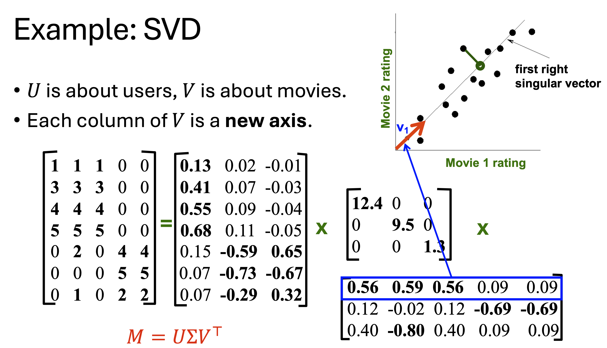
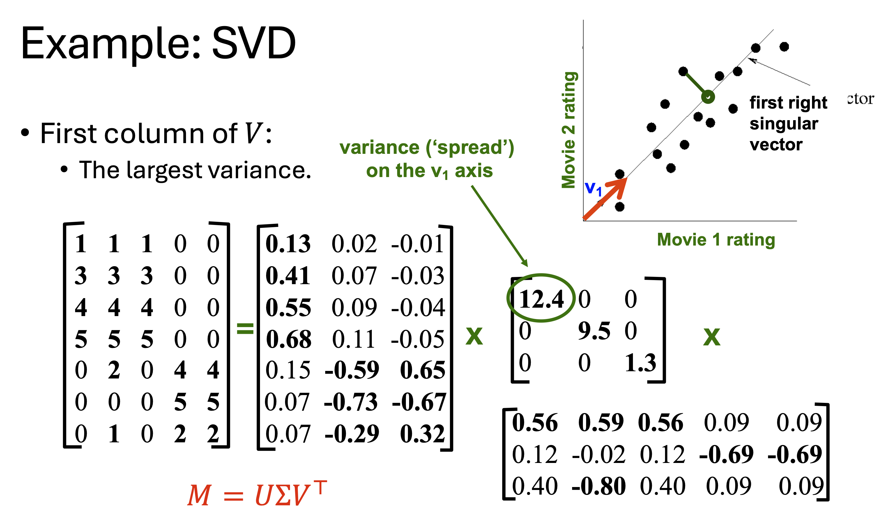
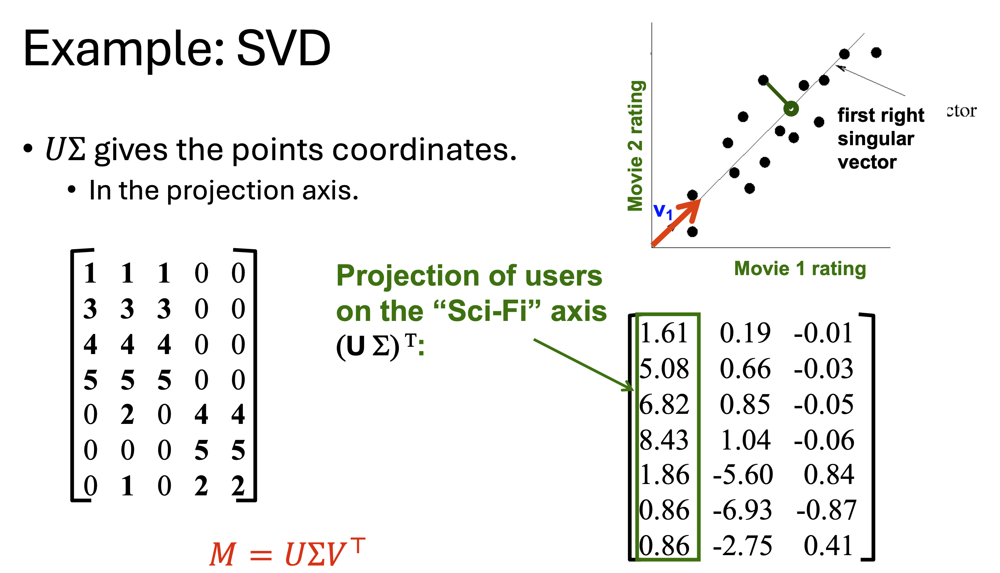
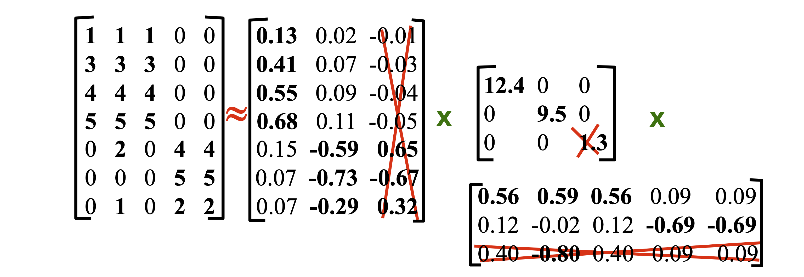
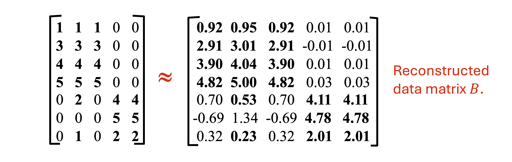
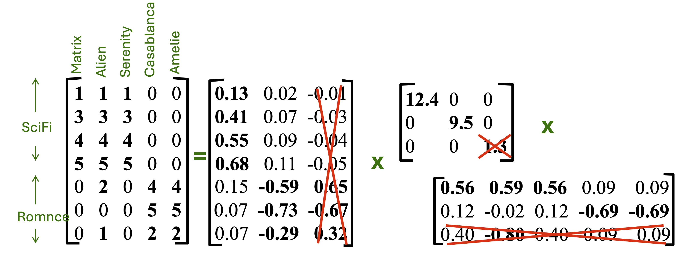
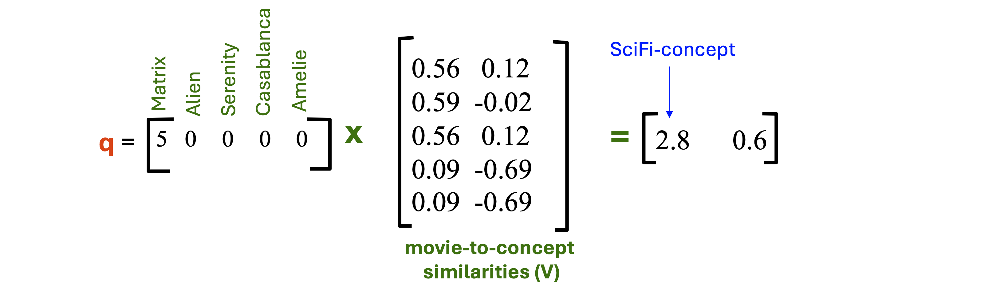
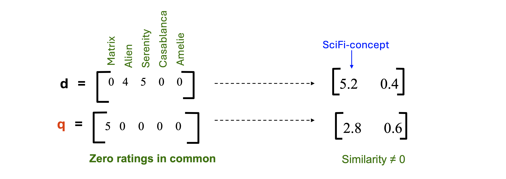

1. 들어가며 (Introduction)
지난 포스트에서는 특이값 분해(SVD)의 수학적 정의와 분해된 각 행렬(\(U, \Sigma, V\))이 데이터 마이닝 관점에서 가지는 직관적인 의미를 다루었습니다. 이번 포스트에서는 SVD를 실제 차원 축소(Dimensionality Reduction)에 어떻게 적용하는지 그 기하학적 메커니즘을 상세히 살펴봅니다.
데이터의 노이즈를 제거하고 핵심 정보만을 남기는 최적 하위 랭크 근사(Best Low-Rank Approximation)의 수학적 원리를 이해하고, 추천 시스템 환경에서 겹치는 평가 기록이 전혀 없는 두 사용자 간의 유사도를 구하는 “잠재 공간 쿼리(Querying in Concept Space)” 기법까지 9장의 상세한 시각 자료와 함께 연결하여 학습해 보겠습니다.
2. 기하학적 직관: 데이터의 투영(Projection)
차원 축소의 핵심은 데이터를 표현하는 데 필요한 “좌표축의 수”를 줄이는 것입니다. 추천 시스템(User-Movie Matrix)을 예로 들어 기하학적인 상황을 상상해 봅시다. 특정 개념(예: Sci-Fi)에 속하는 2개의 영화가 있고, 여러 사용자가 이 영화들에 내린 평점을 2차원 평면상에 점으로 찍어본다고 가정해 보겠습니다.

데이터 점들은 평면 전체에 무작위로 흩어져 있지 않고 특정한 선형적 추세(Trend)를 따라 길게 늘어서 있습니다. 이때 SVD를 통해 얻은 첫 번째 우측 특이 벡터 \(v_1\)은 바로 데이터의 분산(Variance)이 가장 큰 방향을 정확히 가리킵니다. 원래는 한 사용자의 위치를 설명하기 위해 \((x, y)\) 좌표 2개가 필요했지만, 데이터 점들을 \(v_1\) 축 위로 투영시키면, \(v_1\) 선상에서의 위치라는 단 1개의 좌표만으로도 해당 사용자의 특성을 꽤 정확하게 설명할 수 있게 됩니다. 이것이 차원 축소의 본질입니다.
3. SVD를 이용한 실제 차원 축소 연산
3.1. 잠재 공간으로의 매핑 수식 유도
그렇다면 사용자들을 새로운 “개념 축(Concept Axis)” 위로 투영한 좌표값은 행렬 연산으로 어떻게 구할 수 있을까요?


원본 행렬 \(M\)을 \(M = U\Sigma V^{\top}\)로 분해했을 때, 데이터 \(M\)을 새로운 직교 기저 행렬 \(V\)의 공간으로 투영하는 연산은 \(M\)에 \(V\)를 곱하는 것입니다. \[MV = (U\Sigma V^{\top})V = U\Sigma (V^{\top}V)\] \(V\)는 직교 행렬이므로 \(V^{\top}V = I\) (항등 행렬)가 성립합니다. 따라서 다음과 같이 정리됩니다. \[MV = U\Sigma\]

즉, \(U\Sigma\) 행렬의 각 행(Row)은 사용자들이 새로운 잠재 개념 공간에서 가지는 투영 좌표를 의미하게 됩니다.
3.2. 특이값 절삭 (Truncating Singular Values)
완벽한 복원이 아닌 “차원 축소”를 수행하려면, 가장 작은 특이값들을 0으로 만드는 절삭(Truncation) 과정을 거칩니다.

- \(\Sigma\)에서 크기가 작은 하위 특이값을 0으로 지웁니다.
- 대응하는 \(U\)의 열과 \(V^{\top}\)의 행들도 연산에서 배제(Truncate)됩니다.
- 그 결과 노이즈가 제거된 근사 복원 행렬 \(B\)를 얻게 됩니다.
4. 최적 하위 랭크 근사 (Best Low-Rank Approximation)
4.1. 복원 오차와 근사 행렬
일부 특이값을 버렸기 때문에 복원된 행렬 \(B\)는 원본 행렬 \(M\)과 완벽히 일치하지 않습니다.

이 둘 사이의 정보 손실량, 즉 복원 오차(Reconstruction Error)는 Frobenius Norm의 제곱(\(||M-B||_{F}^{2} = \sum (M_{ik} - B_{ik})^{2}\))으로 측정합니다. Eckart-Young-Mirsky 정리에 따르면, SVD를 통해 상위 \(r\)개의 특이값만 남긴 행렬 \(B\)는 주어진 랭크 \(r\)에서 원본 행렬 \(M\)과의 오차를 가장 최소화하는 최적의 근사 행렬입니다.
4.2. “에너지(Energy)” 보존과 잠재 쿼리 준비
특이값 \(\sigma_i\)는 해당 잠재 요인이 담고 있는 데이터의 “에너지(분산)”를 뜻하며, 총 에너지는 특이값의 제곱합(\(\sum \sigma_{i}^{2}\))입니다. 보통 총 에너지의 90% 이상을 보존하도록 \(r\)을 정합니다. 앞선 예시에서 1.3을 버려도 99% 이상의 에너지가 보존되었습니다. 버려진 에너지는 무작위적인 노이즈일 확률이 높아, 차원 축소는 일반화(Generalization) 성능을 높입니다.

5. 활용: 잠재 개념을 이용한 쿼리 (Querying Using Concepts)
차원이 축소된 행렬 공간은 추천 시스템에서 새로운 사용자나 평가 기록이 적은 사용자를 평가할 때 매우 강력한 힘을 발휘합니다.
5.1. 새로운 사용자의 영화 추천 예측
새로운 사용자 \(q\)가 “Matrix” 영화에만 5점을 주고, 나머지는 보지 않았다고 가정합시다 (\(q = [5, 0, 0, 0, 0]\)).

Step 1: 잠재 개념 공간 매핑 \(q \times V\) 연산을 통해 사용자가 첫 번째 잠재 개념(Sci-Fi)에 \(2.8\), 두 번째 개념에 \(0.6\)의 선호도를 가짐을 파악했습니다.
Step 2: 예측 평점 복원 이 개념 선호도 점수에 다시 \(V^{\top}\)를 곱하면, \((qV)V^{\top} = [1.64, 1.64, 1.64, -0.162, -0.162]\) 라는 예측 결과를 얻습니다. 사용자가 보지 않았던 다른 Sci-Fi 영화(Alien, Serenity 등)들에 \(1.64\)라는 높은 양수 평점이 예측되므로 이를 추천할 수 있습니다.
5.2. 데이터 희소성 및 영점 겹침(Zero-Overlap) 문제 해결
SVD 기반 차원 축소의 가장 혁신적인 성과는 데이터 희소성 문제를 해결한다는 것입니다.

위 그림처럼, 사용자 \(d\)와 사용자 \(q\)는 공통으로 시청한 영화가 단 하나도 없기 때문에 전통적인 코사인 유사도를 사용하면 유사도가 0이 됩니다. 하지만 이들을 차원 축소된 잠재 개념 공간(Concept Space)으로 매핑하여 내적하면 강력한 양수(\(5.2 \times 2.8 + \dots > 0\)) 관계가 성립합니다. 표면적으로 본 영화는 달랐지만, 심층적인 “Sci-Fi 선호”라는 잠재 성향이 같았기 때문입니다.
6. 요약 (Summary)
- 기하학적 투영과 차원 축소: SVD는 분산이 가장 큰 축(\(V\))을 찾아내 데이터를 투영(\(U\Sigma\))하고, 하위 특이값 요소들을 제거(Truncation)함으로써 노이즈 없는 차원 축소를 실현합니다.
- 최적 하위 랭크 근사: 보존되는 에너지율(통상 90% 이상)을 기준으로 \(r\)을 결정하면, 수학적으로 Frobenius Norm 오차가 최소화된 최적의 근사 행렬을 구축할 수 있습니다.
- 잠재 공간 쿼리의 위력: 공통 평가 기록이 없는 희소(Sparse) 데이터 환경에서도, 데이터를 잠재 공간으로 투영(\(qV\))하면 숨겨진 선호도 유사성을 찾아내어 훌륭한 추천(Prediction)을 수행할 수 있습니다.